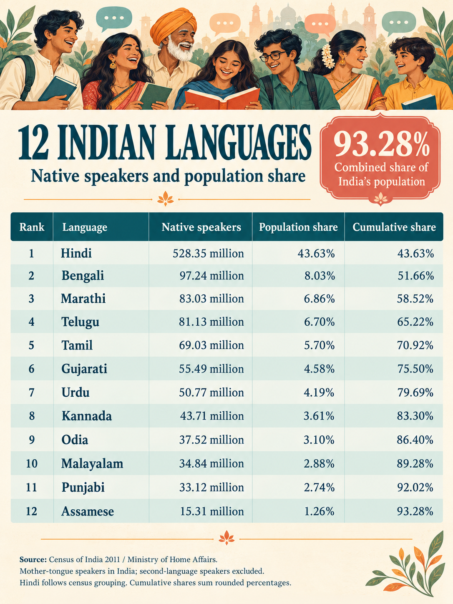
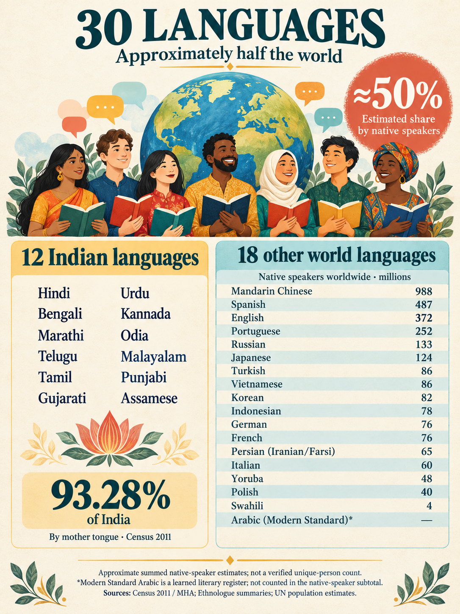

Poetry · Language · Translation
A multilingual poetry collection can bring a poem into many lives. Choosing its languages calls for attention to population, literary traditions and the experience of reading.
A poem begins in a particular language. Its tenderness may live in a form of address, its humor in the distance between a question and an answer, its grief in something the speaker leaves unsaid. A translation has to notice these things before it can carry them elsewhere.
Consider an Odia saying: ଠାକୁର ଘରେ କିଏ — ମୁଁ କଦଳୀ ଖାଇନାହିଁ। Literally: “Who’s in the prayer room?”—“I didn’t eat the bananas!” Nobody asked about bananas. The unprompted denial gives the speaker away.
An English adaptation might say, “Who’s in the kitchen?”—“I didn’t eat the cookies!” The setting changes, but the listener recognizes the same human behavior. That version is an adaptation, not a word-for-word translation. In a literary work, keeping the prayer room and bananas may be the better choice: the original setting can carry a significance that should not disappear merely because it is unfamiliar.
This small example opens a larger question. When a poetry collection travels into other languages, which languages should it enter—and what should survive the journey?
Large speaker populations can help a publisher identify where translations might find readers. Within India, twelve census language categories account for 93.28% of the population by mother tongue, using the rounded shares in the 2011 Census table reproduced by the Ministry of Home Affairs. The figure describes that census, not a new measurement of India today. Census source.
The twelve are Hindi, Bengali, Marathi, Telugu, Tamil, Gujarati, Urdu, Kannada, Odia, Malayalam, Punjabi and Assamese. The Hindi category follows the census classification, which groups several mother tongues under that heading. The statistic is useful for planning, but it does not mean a standard Hindi edition will offer every person in that category an identical reading experience.

A complementary selection of eighteen other languages brings the total to thirty: Mandarin Chinese, Spanish, English, Portuguese, Russian, Japanese, Turkish, Vietnamese, Korean, Indonesian, German, French, Persian, Italian, Yoruba, Polish, Swahili and Arabic.
This is one editorial selection, not a list of the world’s thirty most important languages. Population helps explain some choices; literary variety helps explain others. A different publisher, collection or community could reasonably choose a different set.
Mandarin Chinese, Spanish and English bring large native-speaking populations. Persian and Arabic add substantial poetic traditions. Polish is a compelling choice for a poetry collection, with voices such as Czesław Miłosz and Wisława Szymborska. Yoruba and Swahili bring different African literary perspectives: Yoruba’s poetic traditions include praise poetry, while Swahili encompasses a substantial body of oral and written literature. Miłosz; Szymborska; Yoruba poetry research; Swahili literary study.
Their value does not depend on all of them making an equal contribution to a population total. A small addition to a percentage can be a substantial addition to the range of voices a reader encounters.

Using rounded native-speaker estimates, this selection represents roughly half the world’s population. That phrase should be read as a planning estimate. It combines language figures with different underlying dates and definitions; a person with more than one native language may appear in more than one count. The world population benchmark used here is approximately 8.3 billion in 2026. Speaker-data summary; UN-based population benchmark.
The India table and the worldwide calculation also answer different questions. The former counts speakers within India in 2011. The latter needs worldwide figures, including speakers outside India. Those two sets of numbers should not be substituted for each other.
A speaker population is not an audience already reached. People need access to the edition, an interest in the work and the ability to read it comfortably. Even a carefully researched language estimate cannot predict how many people will encounter a particular poem.
A second language is an additional language learned alongside or after a person’s home language. Someone may speak it confidently, read it with ease, struggle to write it, or have a different balance of abilities. There is no single reading proficiency implied by the label “second-language speaker.” The criteria used to count speakers also differ between sources. Definitions and limits of speaker counts.
This does not make second-language readers less important. Many people conduct much of their reading in a language learned through school, work or personal interest. For a poetry edition, the relevant question is whether they can appreciate the writing in that language.
Including these readers broadens potential reach, but adding language totals does not produce a valid coverage percentage. A person who reads Bengali, Hindi and English is one reader, not three. To calculate unique coverage, one would need information about which language abilities occur together in the same people.
Modern Standard Arabic illustrates why a demographic category should not decide an editorial choice. People grow up speaking regional Arabic varieties; the standard literary register is acquired through education. Classifying it as a learned register does not put it on the same cultural footing as an unrelated foreign language. It is a significant medium for poetry and literature, even though the native-speaker subtotal used here excludes it. Arabic classification; Modern Arabic poetry.
Swahili presents a different example. The speaker-data summary used here lists about four million native speakers and ninety-one million second-language speakers. The small native-speaker number alone therefore misses much of its role as a shared language. Its oral and written literary traditions provide a separate reason to include it. The larger speaker figure still should not be presented as a count of literary readers. Swahili speaker estimates; Swahili literature.
Once the languages are chosen, the hardest decisions are still ahead. A translated poem needs its meaning, movement and emotional pressure. A joke should give the reader room to recognize the joke. A hesitant admission should remain hesitant. A plain sentence should not become ornate simply because it has crossed a language boundary.
Natural translation also needs judgment about cultural detail. A reference can be retained, briefly explained or adapted, depending on its role in the poem. Familiarity is not always the goal. A reader can enter an unfamiliar world if the translation gives enough footing without explaining away its mystery.
For a multilingual collection, each edition should preserve the original alongside the translation where practical, distinguish translation from adaptation, and invite review from a reader fluent in the target language. Population figures can help set priorities. The quality of that encounter determines whether the poem arrives.
Thirty languages create thirty possible entrances. What matters beyond the number is the care with which each door is opened.